9月27日 土曜日
20:49
👆 タップしてパスコード入力
🔥 tinder
🎛️ 発見設定
ここで変えた条件は、実際にカードの表示に反映されるよ（ひろとは特別枠でいつも出てきます）。
最大距離100 km
年齢の下限18歳
年齢の上限40歳以上
⭐ Super Like を優先表示
🔥 最近アクティブな人を優先
It's a Match!
ひろと とマッチしました ⭐ Super Likeから
2025年9月27日
nao_0324
お知らせ
yui_sさんがあなたの投稿にいいねしました 2時間前
sauna_mさんがあなたをフォローし始めました 昨日
20
投稿
342
フォロワー
211
フォロー中
なお｜大阪
NCT WISH サクヤ💚 と 井汲大翔🤍 がすき
NCT WISH サクヤ💚 と 井汲大翔🤍 がすき
最新投稿へのコメント 3件 DMリクエスト 0件
nao_0324
💬✈️🔖
nao_0324 静かなカフェで、ほっとした日☕ いいね！36件
11月1日
sauna_m落ち着くカフェいいな11月1日
yui_sラテアートかわいい11月1日
nao_0324
💬✈️🔖
nao_0324 屋台のたこ焼きが優勝してた日🐙 いいね！52件
10月4日
yui_sたこ焼き〜！ここどこ10月4日
m2326熱々いちばん10月4日
📩 DMリクエスト
リクエストはまだない。
yui_s
なお！？ ニュース見たんだけど…
あれ、なおだよね？ 心配でDMした
カフェオレ☕
👁 12人 ・ yui_s、sauna_m 他
nao_0324 ・ ハイライト
nao_ura 非公開
32
投稿
2
フォロワー
2
フォロー中
サブ垢
本垢に載せない写真の置き場
2025.09.27 -
見つけても、内緒でいてください
本垢に載せない写真の置き場
2025.09.27 -
見つけても、内緒でいてください
193.hiroto_jixiang ☑
119
投稿
8.1万
フォロワー
12
フォロー中
井汲大翔 Hiroto
contact📮: 193hiroto23@gmail.com
한국어 中文🙆
contact📮: 193hiroto23@gmail.com
한국어 中文🙆
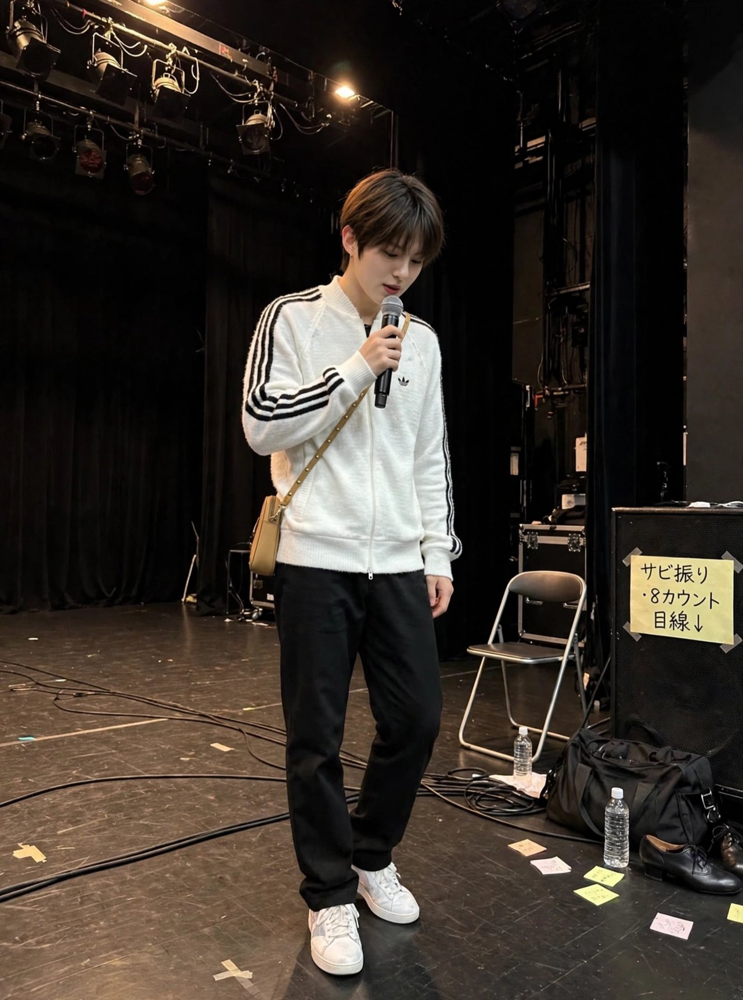
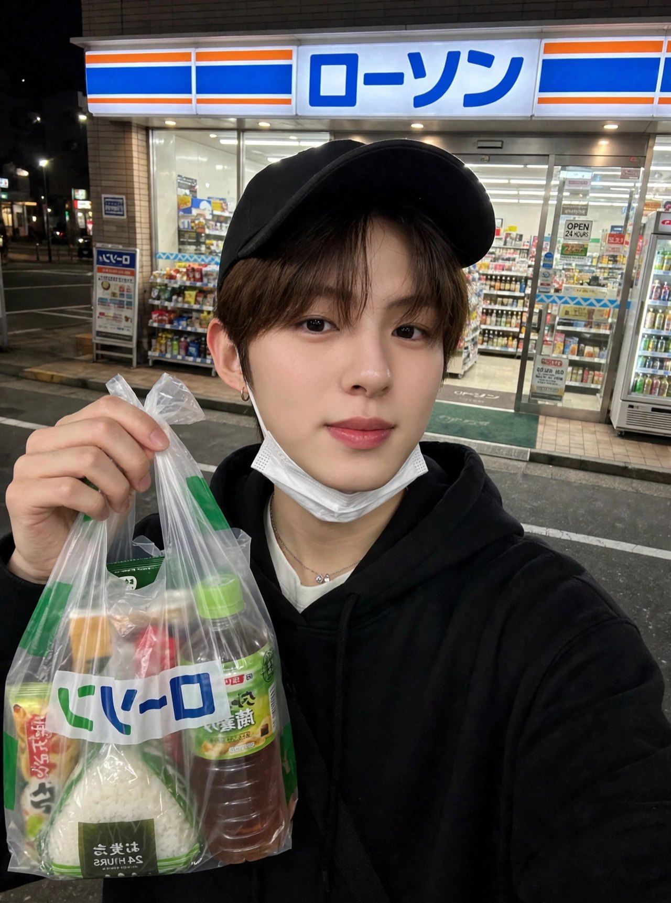
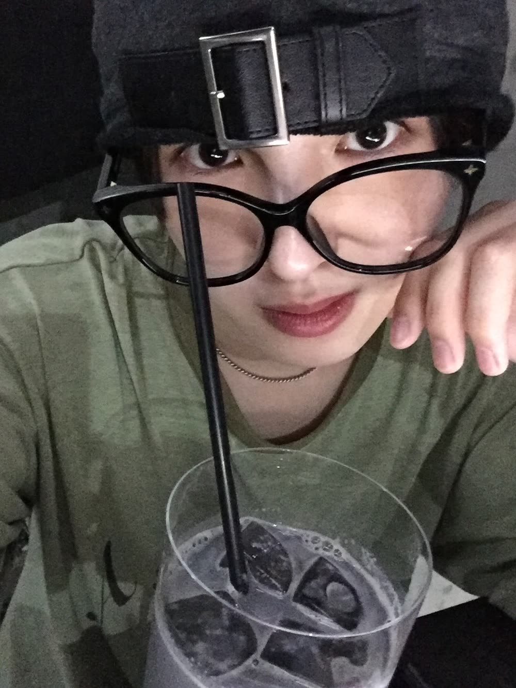
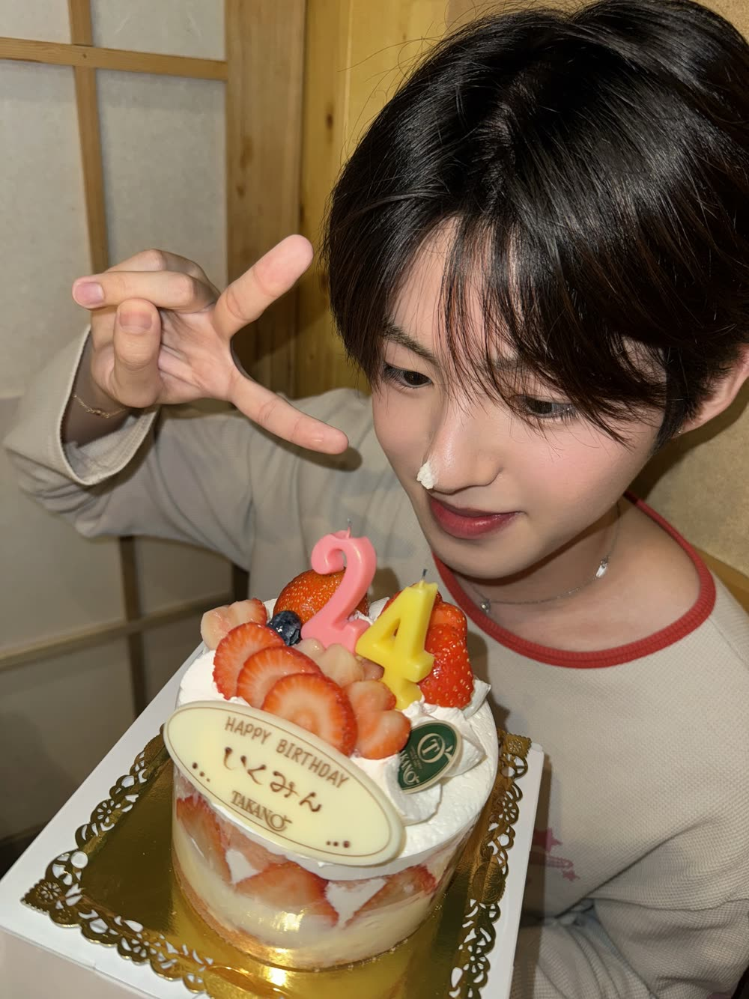
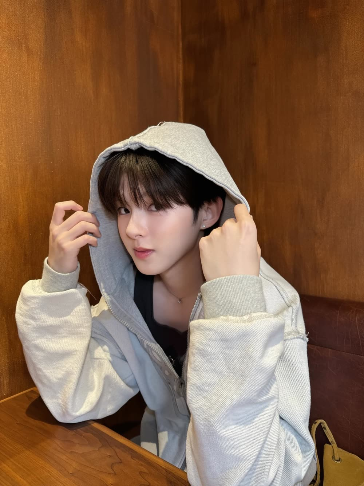
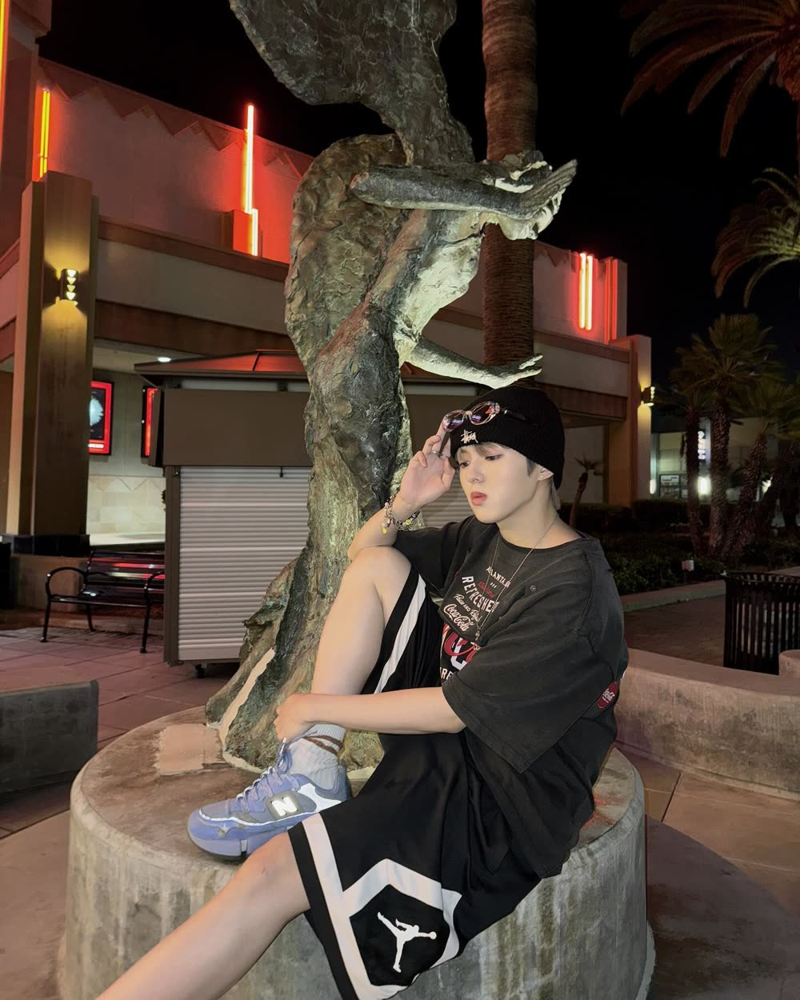
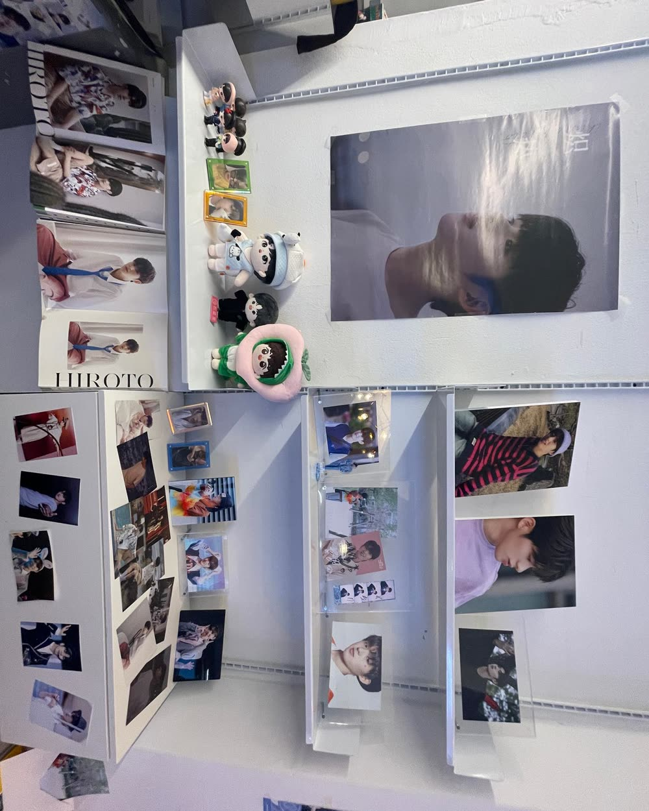
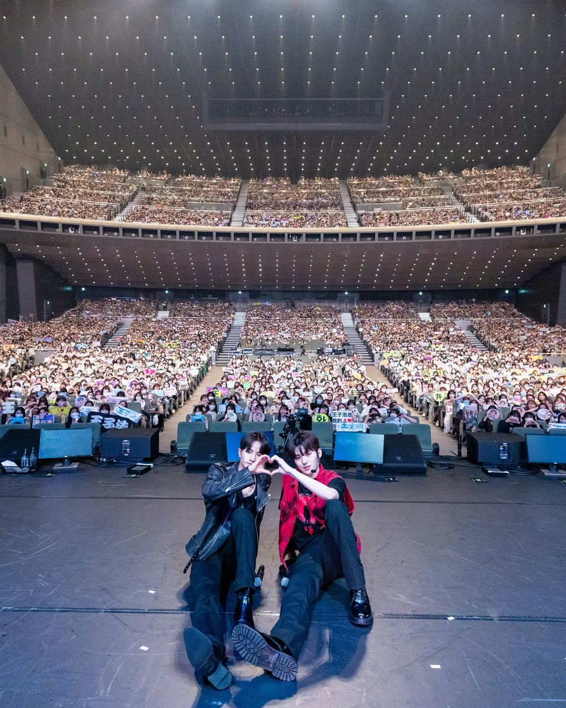
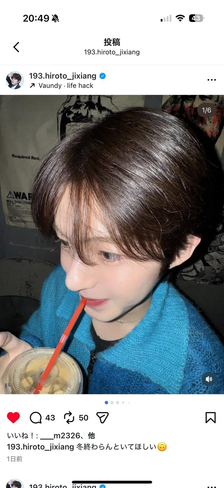


💬 128✈️🔖
いいね！：8,214件
193.hiroto_jixiang 大阪、ありがとうございました。声、届いてたらええな
10月26日
193.hiroto_jixiang 大阪、ありがとうございました。声、届いてたらええな
10月26日
rottdan_a届いてたよ！！
m_supportこの横顔ずるい
💬 96✈️🔖
いいね！：6,930件
193.hiroto_jixiang 終わった直後。まだ耳が熱い
10月26日
193.hiroto_jixiang 終わった直後。まだ耳が熱い
10月26日
hiro_pyonおつかれさま…！
💬 74✈️🔖
いいね！：5,412件
193.hiroto_jixiang リハ。明日、本番
10月25日
193.hiroto_jixiang リハ。明日、本番
10月25日
rottdan_aジャージでも衣装でもかっこいいのなんなん
💬 41✈️🔖
いいね！：5,655件
193.hiroto_jixiang 帰り。寒くなった
10月30日
193.hiroto_jixiang 帰り。寒くなった
10月30日
hiro_pyon夜の自撮り、雰囲気ちがう
💬 132✈️🔖
いいね！：7,102件
193.hiroto_jixiang マロン。ただいま
10月27日
193.hiroto_jixiang マロン。ただいま
10月27日
m_supportマロンくん、大きくなった…！
rottdan_aデレデレなのバレてる
💬 58✈️🔖
いいね！：4,876件
193.hiroto_jixiang スタジオ。振り、入った
10月20日
193.hiroto_jixiang スタジオ。振り、入った
10月20日
rottdan_a練習着のひろとレアすぎ
💬 47✈️🔖
いいね！：6,204件
193.hiroto_jixiang マロン、腕の中で寝た
10月19日
193.hiroto_jixiang マロン、腕の中で寝た
10月19日
m_supportマロンくん幸せそう…
rottdan_a…隣のバッグ、誰の？
💬 43✈️🔖
いいね！：m2326、他
193.hiroto_jixiang このまま時間が止まればいいのに🙃
1日前
193.hiroto_jixiang このまま時間が止まればいいのに🙃
1日前
rottdan_aこの写真すき！
hiro_pyonほんとそれ〜！ずっとこの笑顔見てたい
💬 61✈️🔖
いいね！：3,499件
193.hiroto_jixiang 食べまくってる🍚 いつもコーラ ご飯も お肉も🍖
実際の投稿より
193.hiroto_jixiang 食べまくってる🍚 いつもコーラ ご飯も お肉も🍖
実際の投稿より
トーク
ひろと
スタジオとレッスンの日々
🎵 BGM： サウナ帰りのプレイリスト
ホーム写真：夜の散歩で撮ったやつ
※ プロフィールは本人だけが見れる設定…のはず
※ プロフィールは本人だけが見れる設定…のはず
メンバー
メンバー
ノート
アルバム
人気アイドル、ファンミーティング＆ライブツアーを発表 大阪・東京のホール公演
エンタメ通信 ・ 18:20
エンタメ通信 ・ 18:20
ファンミーティングで見せた“王子様衣装”がSNSで話題に
芸能デスク ・ 17:05
芸能デスク ・ 17:05
——まだ、嵐の前。静かな夜。
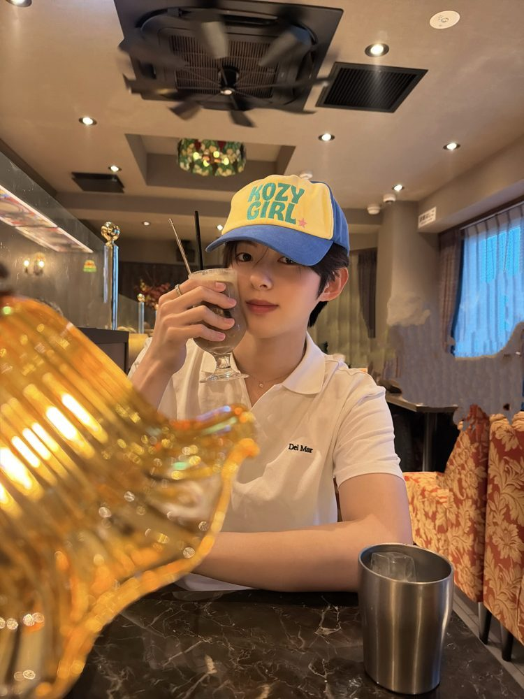
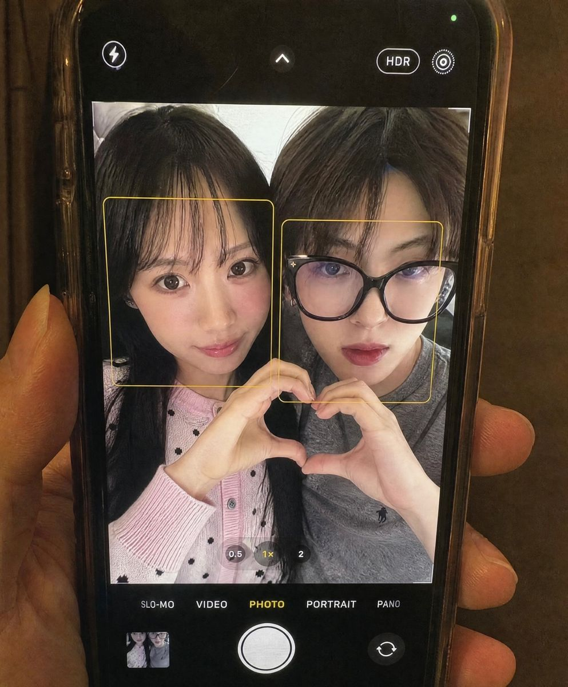
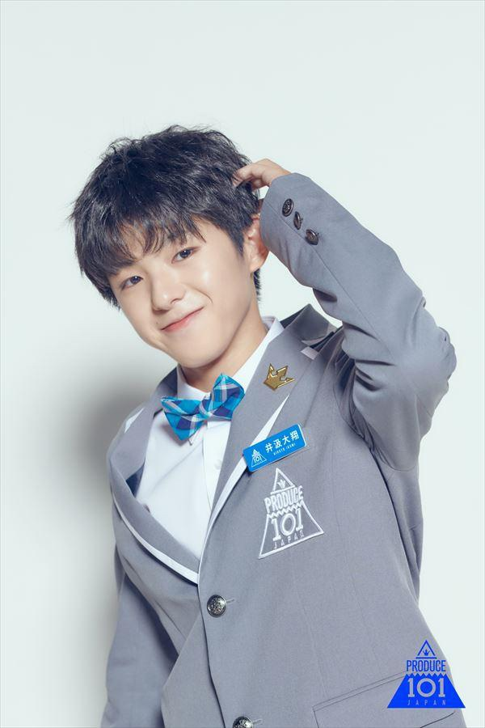
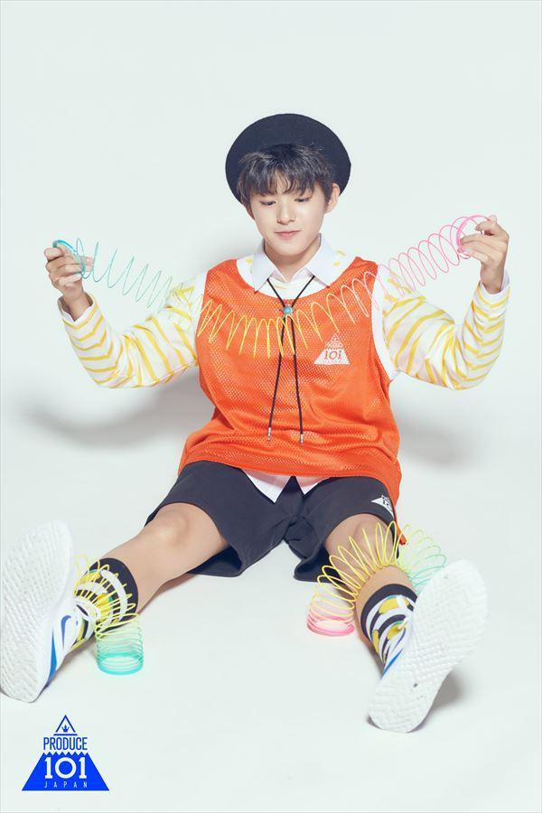
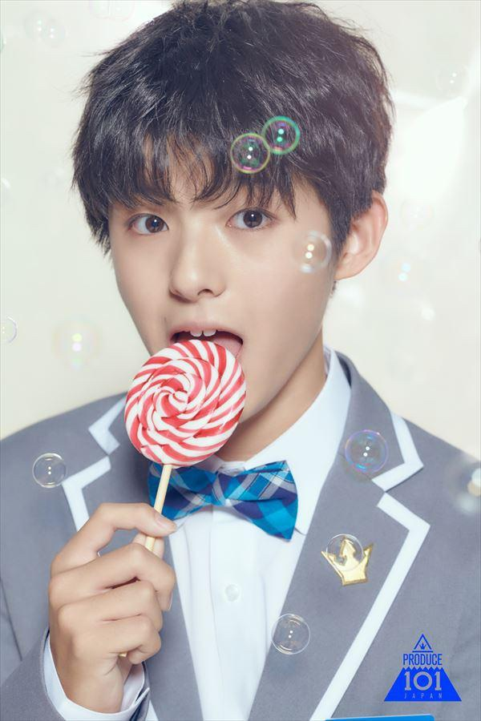
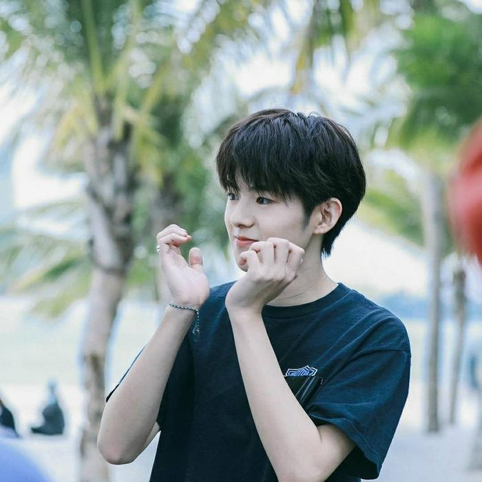


※週刊誌に載ったカフェの写真はここにはない。でもXでは、昨日のカフェと、拡散中のプロフ写真と、この投稿のキャプションが掘られていく…。
HIROTO
@193hiroto
2
フォロー中
43.6K
フォロワー
791.9K
いいね
井汲大翔 📮 193hiroto23@gmail.com
🔗 linktr.ee/hiroto_official
🔗 linktr.ee/hiroto_official
本人の実際のTikTokより ・ 人気順
@193hiroto 누나 너무 예뻐!😘 #shinee
❤️ 140.5K
@193hiroto これNGバージョンな🙅♀️
❤️ 79.2K
@193hiroto #nctwish #steady 最後はミスした😛
❤️ 44K
@193hiroto 練習生の時にいっぱい聞いた曲!!😎 #seventeen #dance
❤️ 33.1K
@193hiroto #TREASURE #YELLOWchallenge 人が多くて恥ずかしかった🫣
❤️ 23K
動画は本人のTikTok（@193hiroto）の実際の投稿です
🔔 サウンド（効果音・着信音）
📳 バイブレーション
🖼 ホーム画面の壁紙
📖 物語の進み具合第1話
📚 あらすじ・チャプター
エンディング図鑑
💭 思い出
💭 解放した思い出0 / 15
📷 Instagram フォロワー342
𝕏 フォロワー189
🔥 炎上度のピーク0%
📞 通話した回数0回
👆 Tinder スワイプ数0回
❤️ Tinder Like数0回
🔥 Tinder マッチ数0組
⭐ Super Like 受信まだ
🐶 ひろとの愛犬マロン
📞 通話履歴
まだ通話はない
『現役アイドル、Tinderやってた件』 v793
※ この作品は創作フィクションです。
※ 通話の声はAI生成音声（AnyVoice）を使用しています。
※ フォロワー数などは物語上の演出です。
※ この作品は創作フィクションです。
※ 通話の声はAI生成音声（AnyVoice）を使用しています。
※ フォロワー数などは物語上の演出です。
ひろと
通話中… 00:00
「…なおの声、聞きたかってん」
第1話
出会い